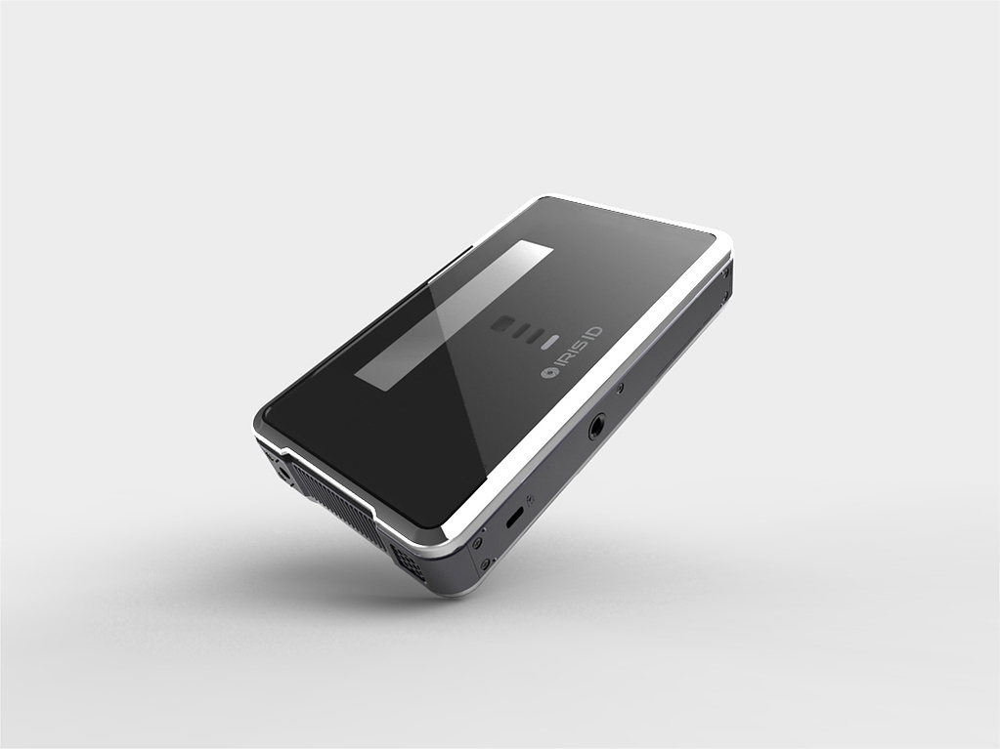
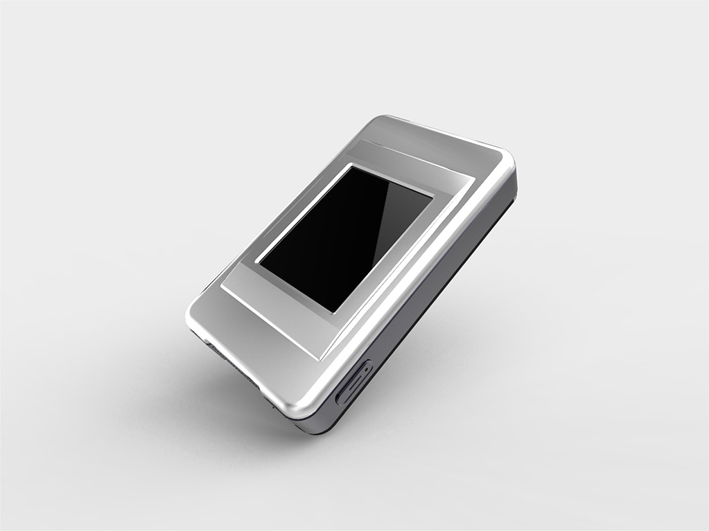

iCAM TD100 – Tethered Portable Iris Recognition Camera
Product design of a tethered portable iris recognition camera for Iris ID Systems.
Overview
Industrial design of the iCAM TD100 – a tethered portable iris recognition camera. Designed for ergonomic field use while housing precision iris-capture optics and connectivity hardware.
Views
- Front view – capture lens housing & ergonomic grip
- Rear view – IO ports, status indicators


Previous
–
Next
iCAM H100 →